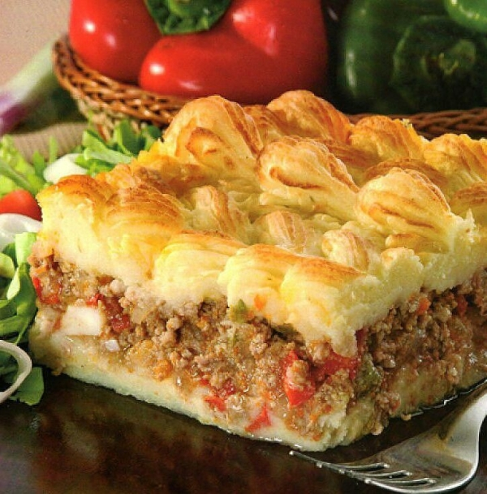

Pure de Papa Recipe

Description
This is a lot like a Shepherd's Pie with a little Latin flair. Good comfort food.
Ingredients
- 5 cups potatoes, peeled and cubed
- 2 tablespoons butter, or to taste
- salt to taste
- 2 eggs, beaten
- ½ cup vegetable oil
- 1 clove garlic, minced
- 1 onion, diced
- 2 tomatoes, diced
- 1 tablespoon tomato paste
- 1 pound ground beef
- 2 tablespoons shredded panquehue cheese
- ½ teaspoon chopped fresh parsley
- salt and black pepper to taste
- 1 pinch cayenne pepper (Optional)
Instructions
-
Preheat an oven to 350 degrees F (175 degrees C). Grease a 2-quart
baking dish.
-
Place the potatoes into a large pot and cover with salted water. Bring
to a boil; reduce heat to medium-low, cover, and simmer until tender,
about 20 minutes. Drain and allow to steam dry for a minute or two. Mash
the hot potatoes with butter and salt. Let cool until just warm; stir in
the beaten egg until smooth.
-
Meanwhile, heat the oil in a large skillet over medium heat. Stir in the
garlic and onion; cook and stir until the onion has softened and turned
translucent, about 5 minutes. Stir in the tomatoes and tomato paste;
continue cooking until the tomatoes soften and begin to lose their
shape. Add the ground beef and cook until browned, about 10 minutes.
Stir in the panquehue cheese and parsley; season to taste with salt,
black pepper, and cayenne pepper.
-
Spread half of the mashed potato mixture into the prepared baking dish.
Cover with the ground beef mixture, then spread the remaining mashed
potatoes over the beef to completely cover.
-
Bake in the preheated oven until the potatoes are hot and the top is
lightly browned, about 40 minutes.
Back